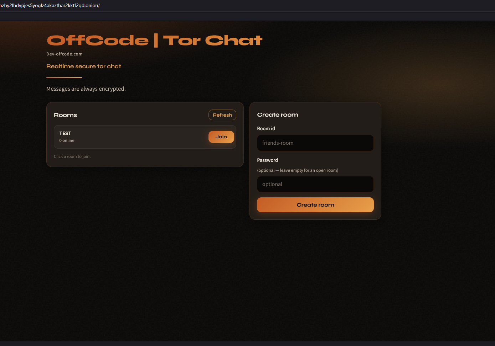
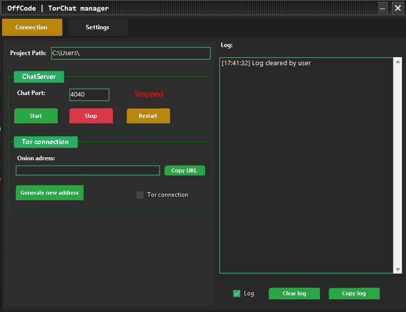
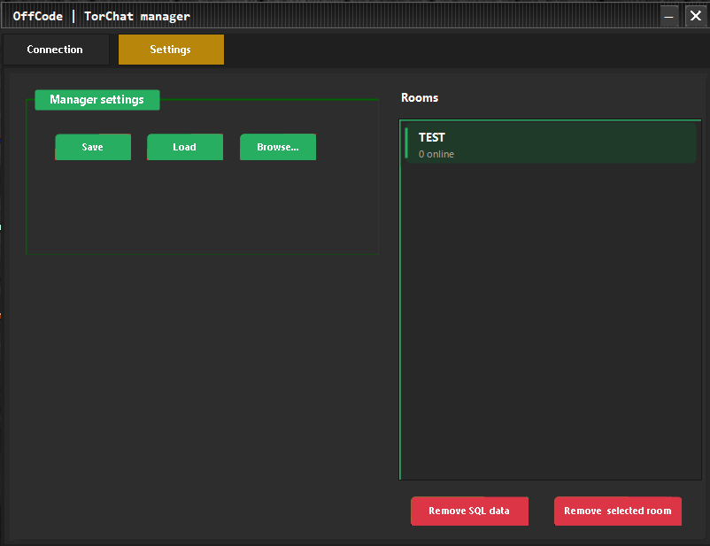

🧅 OffCode | Tor Chat
End-to-end encrypted realtime chat over a Tor Hidden Service

Tor Chat is built so anyone can stand up their own private chat on the Tor
network — no cloud account, no clearnet bind. Guests open your .onion in Tor
Browser; messages are encrypted in the browser with WebCrypto before they reach the host,
so ChatServer is only a blind SignalR relay that stores ciphertext.
Host with Server Manager (section below). Open rooms use the room id as key material; locked rooms keep the password in the browser only (the server sees a join proof, never the key).
Features
Tor-only hosting
ChatServer binds 127.0.0.1 only. Tor Expert Bundle publishes a v3
.onion and forwards VirtualPort 80 (and the app port) to localhost — no
clearnet chat listener.
HiddenServiceVersion 3,ClientOnly 1,SafeLogging 1- SOCKS disabled on the HS process (
SOCKSPort 0) - Open in Tor Browser:
http://ADDRESS.onion/
Browser E2EE
WebCrypto PBKDF2 → AES-256-GCM. Separate KDF domains for join proof vs room key so the server never derives the message key from join material.
- AAD binds
roomId|senderId|nonceinto every ciphertext - Open rooms: key from room id (documented tradeoff)
- Locked rooms: password stays in the browser (min 8 characters)
Rooms & message TTL
Create open or locked rooms, join from a modal, chat with per-message lifetime.
- Retention: 30 min / 1 hour / 2 hours / Keep
- Server sets expiry on its clock; DOM + SQLite cleanup
- History sync of active ciphertext on join
Blind relay storage
SQLCipher database under LocalAppData. DPAPI-wrapped DB key. Parameterized queries. Plaintext is never written to disk.
- Rooms + ciphertext envelopes only
- Max 500 messages per room (oldest trimmed)
- Background cleanup of expired rows
Tor Browser-friendly UI
Copper/Forge web UI designed for onion use: no third-party CDNs, self-hosted fonts, SRI on scripts.
- Strict CSP (
script-src/connect-src 'self') - No LocalStorage / IndexedDB / WebRTC for secrets
- DOM built with
textContent/createElement
🖥️ Server Manager
Windows host console for your Tor chat stack
Server Manager is the host-side control panel: it starts and stops ChatServer
plus a Tor v3 Hidden Service, shows the .onion URL to share, and lets you
administer rooms and storage without ever reading message plaintext — the relay stays blind.


- Start / stop ChatServer and the Tor Hidden Service from one place
- Copy and share the published
.onionURL - Live room list (room id, locked flag, online count only — no message content)
- Remove a selected room in realtime: connected users are forced back to the lobby and that room’s ciphertext history is deleted on the server
- Wipe SQLCipher data under LocalAppData (rooms + ciphertext DB and related key files) for a clean slate
- Point at your ChatServer project path and load/save host config as needed
🔐 Security Architecture
Defence-in-depth for a Tor Hidden Service chat — every layer is independently hardened
🛡️ Request Protection
| # | Protection |
|---|---|
| 1 | Security headers — CSP (default-src 'self',
connect-src 'self'), X-Frame-Options DENY, nosniff,
Referrer-Policy no-referrer, Permissions-Policy, COOP, CORP |
| 2 | Cache-Control — no-store for HTML and
/js/* (sensitive chat shell) |
| 3 | Kestrel hardening — AddServerHeader = false,
MaxRequestBodySize ≈ 64 KB |
| 4 | Rate limiting — Global HTTP ceiling; hub negotiate and
/api/* per connection; Create / Join / Send / GetRooms hub
method limits (ConnectionId — Tor has no useful client IP) |
| 5 | CORS — localhost / *.onion only; no
AllowCredentials (no cookies) |
| 6 | AllowedHosts —
127.0.0.1;localhost;*.onion |
🔒 Server-Level Security
| Component | Implementation |
|---|---|
| Network exposure | ChatServer listens on 127.0.0.1 only; Tor HS forwards
.onion → loopback |
| Blind relay | Never decrypts chat payloads; stores ciphertext + metadata only |
| At-rest encryption | SQLCipher DB; 32-byte key in DPAPI-protected db.key.dpapi |
| Join proofs | Locked rooms store PBKDF2 hash of join proof (not password, not E2EE key); constant-time verify |
| Replay protection | ReplayCache — SHA-256 fingerprint of nonce + ciphertext;
rejects duplicates and >120 s old packets |
| Membership bind | SendEncrypted forces room / sender id / display name from presence — client claims ignored |
| Join error oracle | Generic Cannot join room. — no wrong-password vs missing-room
distinction to clients |
| Admin room delete | DELETE /api/rooms/{id} requires
X-TorChat-Admin token from Server Manager env (Tor clients
cannot delete rooms) |
| SQL injection | Parameterized queries only |
| Logging | No passwords, join proofs, plaintext, or ciphertext logged |
🖥️ Client-Level Security
| Component | Implementation |
|---|---|
| E2EE | WebCrypto AES-256-GCM; PBKDF2 with domain separation
(torchat-join-v1 vs torchat-e2ee-v1) |
| Subresource Integrity | integrity= on SignalR + app scripts (first-party only) |
| XSS hardening | No user innerHTML; messages and room ids via
textContent / createElement |
| ForceLeave | Host-deleted rooms kick clients back to lobby over SignalR |
| No persistent browser secrets | No LocalStorage / IndexedDB / WebRTC for chat material |
| No third-party scripts | Self-hosted fonts and SignalR — nothing loaded from CDNs on the chat app |
Why use OffCode Tor Chat instead of scanned messengers?
Private messaging when big platforms can scan by default
Use OffCode Tor Chat when you do not want to trust a big-tech messenger that may voluntarily scan private messages under EU Chat Control 1.0. You self-host on a Tor Hidden Service with browser E2EE — conversations never sit on a centralized scanned platform.
In July 2026 the EU effectively kept Chat Control 1.0 in force: a temporary regime that again lets major messaging and mail providers run voluntary, suspicionless scanning for CSAM detection — typically until April 2028, or until a permanent “Chat Control 2.0” framework is agreed. That debate is still open; the lasting fight is whether scanning stays limited to cloud platforms or reaches further into encrypted apps.
OffCode Tor Chat is built for a different threat model: you are not handing your conversations to a centralized messenger whose operator can scan content on its own infrastructure. You run the stack yourself on Tor.
- Not a cloud messenger provider — no OffCode-hosted chat backend and no third-party message platform in the middle
- Tor-only Hidden Service — clients reach you via
.onion; the chat HTTP stack does not bind clearnet - You host with Server Manager — ChatServer + Tor on your machine, onion URL under your control
- Browser E2EE and a blind relay — ciphertext only on the server; plaintext never leaves the Tor Browser for the host to read
This is about architecture and privacy defaults — self-hosting on Tor instead of relying on scanned platform messengers. It is not legal advice, and it does not claim immunity from law or excuse illegal use.
Pricing
Simple and transparent access to the system
Free
Complete TorChat system for personal and commercial use.
Full E2EE Tor chat including all features and future updates.
Instant Access & Self-Hosted
Deployment:
Windows / Tor Hidden Service
Developer License
Full C# & WebCrypto source code access for developers.
Complete system source
- ✅ ASP.NET Core ChatServer source
- ✅ Vanilla HTML/CSS/JS + WebCrypto E2EE
- ✅ SignalR Real-time Hubs
- ✅ Server Manager (WinForms) source
- ✅ SQLCipher + DPAPI security modules
- ✅ Tor Hidden Service integration
- ✅ Replay protection & rate limiting
- ✅ Modify & build your own version
Personal Developer License
Study, audit, and build upon the source
Frequently Asked Questions
What is OffCode Tor Chat?
OffCode Tor Chat is a Tor-only, end-to-end encrypted realtime chat. Guests open your
.onion Hidden Service in Tor Browser; messages are encrypted in the
browser with WebCrypto AES-GCM, and ChatServer is a blind SignalR relay that stores
ciphertext only.
Do I host Tor Chat myself?
Yes. Server Manager on Windows starts ChatServer and a Tor v3 Hidden Service on your machine. There is no OffCode-hosted chat cloud — you control the onion URL and the stack.
How does end-to-end encryption work?
Clients encrypt with WebCrypto (PBKDF2 then AES-256-GCM) before sending. Join proof and room key use separate KDF domains so the server cannot derive the message key from join material. Open rooms use the room id as key material; locked rooms keep the password in the browser only.
How does Tor Chat relate to EU Chat Control 1.0?
Chat Control 1.0 lets major messaging providers voluntarily scan private communications. Tor Chat is a different model: self-hosted on Tor, not a centralized big-tech messenger. You avoid that scanned platform path by hosting your own Hidden Service with browser E2EE. This is architectural privacy, not legal advice.
Do clients need Tor Browser?
Yes. Guests open http://ADDRESS.onion/ in Tor Browser. The chat HTTP
stack binds loopback only; Tor publishes the Hidden Service. The UI is Tor
Browser-friendly: self-hosted fonts, SRI scripts, and no third-party CDNs.
Can the host delete rooms or wipe chat data?
Yes. Server Manager shows a live room list (id, locked, online count) and can remove a room in realtime, forcing clients to the lobby and deleting that room’s ciphertext. You can also wipe the SQLCipher database under LocalAppData for a clean slate.